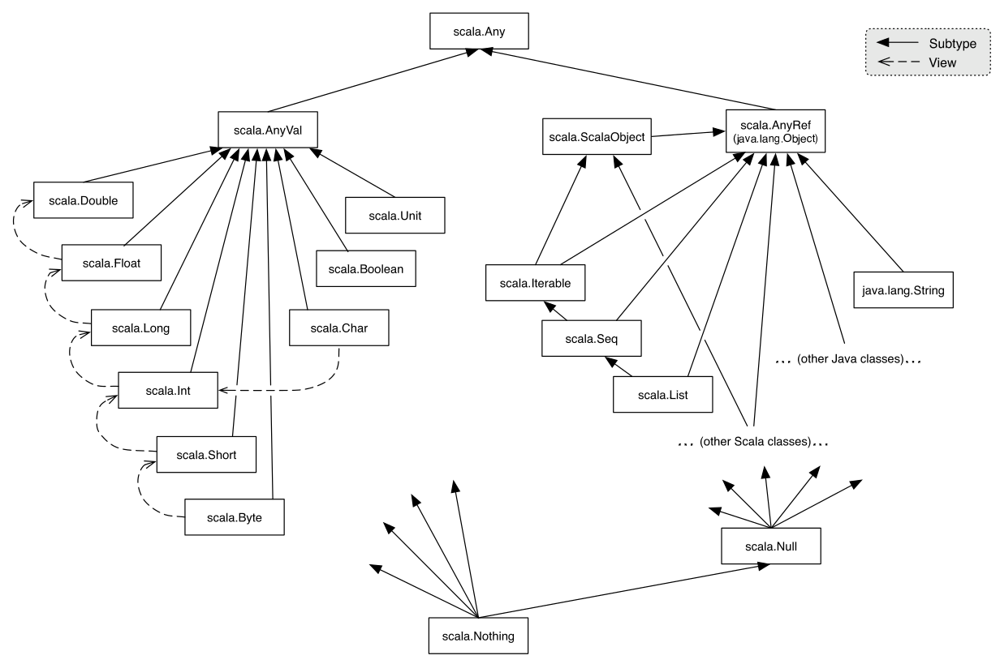

La Scala
La Scala!
NOT that Scala. This Scala:
package org.example.fun
class Sample {
def emitHello: String = "Hello World!"
}
or this Scala:
package org.example.fun
class Sample(val message: String) {
def emitMessage: String = message
}
or this Scala which tests the other Scala
package org.example.fun
import org.junit.runner.RunWith
import org.scalatest.FunSuite
import org.scalatest.junit.JUnitRunner
@RunWith(classOf[JUnitRunner])
class SampleTestSuite extends FunSuite {
test("test this sample") {
val input: String = "Hello World!"
val messageGenerator: Sample = new Sample(input)
assert(messageGenerator.emitMessage === input)
}
}
This discussion attempts to do the following:
Principle: Testing is NOT enough to demonstrate correctness.
"Testing can show the presence of errors but not their absence" - Edsger W. Dijkstra
Principle: Concurrency is difficult to implement and its correctness is very difficult to demonstrate.
"The special characteristics and advantages of functional programming are often summed up more or less as follows. Functional programs contain no assignment statements, so variables, once given a value, never change. More generally, functional programs contain no side-effects at all. A function call can have no effect other than to compute its result. This eliminates a major source of bugs, and also makes the order of execution irrelevant — since no side- effect can change an expression’s value, it can be evaluated at any time. This relieves the programmer of the burden of prescribing the flow of control. Since expressions can be evaluated at any time, one can freely replace variables by their values and vice versa — that is, programs are “referentially transparent”. This freedom helps make functional programs more tractable mathematically than their conventional counterparts." John Hughes Functional Programming Matters
One reason that the mainstream software community took an interest in Functional programming was due to its desire to enhance concurrency. With referential transparency present, optimizing compilers and runtimes should be be able to reorder and parallelize function execution much more easily.
Additionally, with referential transparency present, compilers should be able to prove the correctness of our functions and the compositions of our functions.
In order to control side-effects, we should make our variables immutable. Any attempt to modify a variable marked as a val will result in a compilation error.
val n = scala.math.abs(start)
As mentioned earlier, Scala allows us to create mutable variables, but we should create mutable variables only when it is absolutely necessary (and even then, we should not do it). We create mutable variables by marking them with the var keyword.
var n = scala.math.abs(start)
Like Java and Go, Scala classes and objects are organized by packages.
package com.scala.presentation
class L2 {
...
}
Packages provide logical organization. This allows me to do two things.
First, packages allow me to place like things together and this calms my disdain for chaos.
Second, packages allow me to navigate more easily through new codebases.
A note on packages in Scala
The ease of browsing a new codebase depends upon the agreement between packages and directory structure. This property does not always hold. Unfortunately, this agreement does not hold for Scala. Therefore, developers must make an effort to enforce this alignment.
Static members have been removed in Scala
No static data members
No static methods
In place of static data members and static methods, Scala offers the object. Each object is a singleton and, therefore, only one instance of it exists at runtime. No special ceremony is required to create an object other than to replace the keyword class with the keyword object.
package com.scala.presentation
object Application {
def main(arguments: Array[String]) {
for (argument <- arguments)
println("argument: " + argument)
}
}
Question: Did everyone notice the for loop?
val clothing = List("socks", "pants", "shoes")
for (element <- clothing) {
...
}
This pattern of iteration had already appeared widely in both Java and C#.
Because Scala is functional, it provides the function construct. Although Scala does not enforce this, the Scala community encourages the development of functions which are free of side-effects.
This is an example of a function.
package com.scala.presentation
object Max {
def max(x: Int, y: Int): Int =
if (x >= y)
x
else
y
}
This is a more complicated example of a function.
package com.scala.presentation
object P01 {
def last[T](list: List[T]): T =
list match {
case Nil => throw new NoSuchElementException
case x :: Nil => x
case x :: xs => last(xs)
}
}
Additionally, Scala allows us to define functions within functions.
package com.scala.presentation
object P04 {
def length[T](list: List[T]): Int = {
def lengthAssistant(list: List[T], accumulator: Int): Int =
list match {
case Nil => accumulator
case x :: xs => lengthAssistant(xs, (accumulator + 1))
}
lengthAssistant(list, 0)
}
}
Question: What is all this accumulator business we've seen in the last few slides?
Answer: The use of accumulators allows the developer to receive all of the efficiency of iteration with the elegance of recursion. This technique is called tail recursion.
package com.scala.presentation
object Reverse {
def reverse[T](list: List[T]): List[T] = {
def reverseAssistant(list: List[T], accumulator: List[T]): List[T] =
list match {
case Nil => accumulator
case x :: xs => reverseAssistant(xs, x :: accumulator)
}
reverseAssistant(list, Nil)
}
}
Scala is organized by inheritance as follows:
Question: Why Scala?
Answer: Scala combines the paradigms of Object-Orientation and Functional programming. While Scala does not prevent one from using mutable variables and, therefore, introducing side-effects, it does encourage one to use immutable variables. Scala can be seen as a transitional technology. Scala resides within the world of Object-Orientation, but it offers developers the opportunity to use Functional techniques.
Advantages of Scala
"It Keeps Idiots Out. The biggest advantage of Scala, at least so far, is that it keeps a certain type of coder out of the codebase."
http://www.nomachetejuggling.com/2011/12/15/scala-first-impressions/Code damage is a serious problem.
Disadvantages of Scala
It Keeps Idiots Out
I speculate that the Next Big Language must allow junior developers to participate without allowing them to damage the codebase.
Question: Is it possible for a language to be both restrictive and fun?
At this point, several concessions must be made.
First, Functional programming is not necessarily the next big thing.
Second, even if Functional programming emerges as the next big thing, we cannot be sure that Scala will be the vehicle of choice for Functional development.
On the other hand, Functional programming merits serious consideration. Should we choose to explore Functional programming, we will need some vehicle to explore its terrain. I believe that Scala is a fantastic candidate for this exploration.
Looking forward by looking back
Question: What were the last few NBLs?
Reflection
Question: Is it possible for a language to be both restrictive and fun?
Question: Is it even necessary for the NBL to be restrictive?